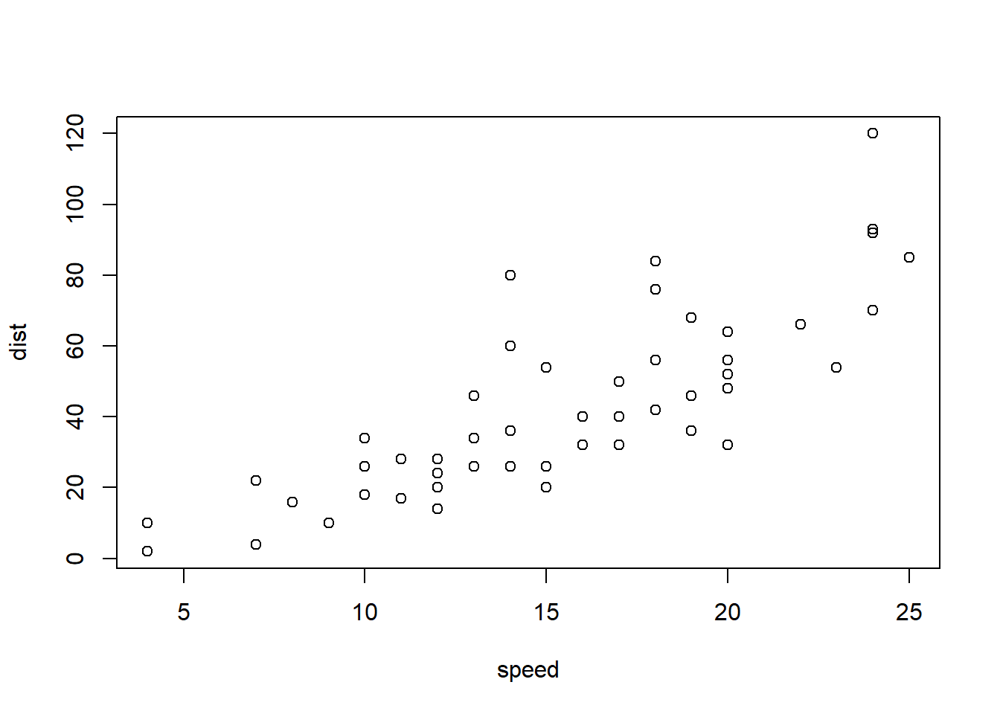
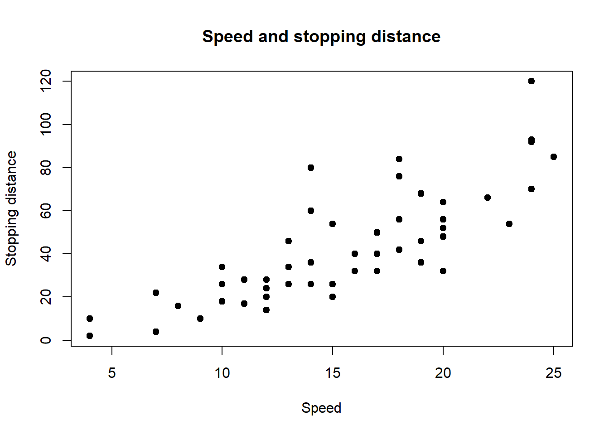
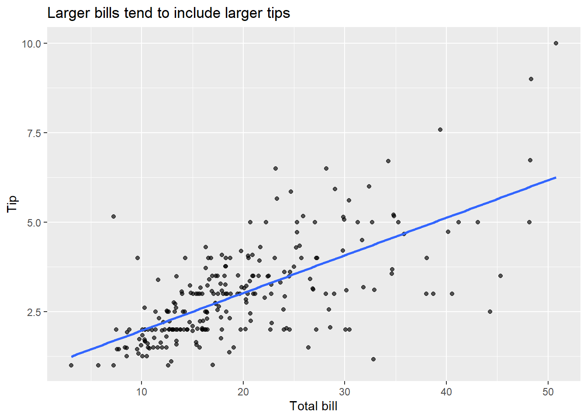

flowchart LR
A["1. Attempt<br>먼저 예측하고 직접 시도"] --> B["2. Ask<br>맥락과 제약을 포함해 질문"]
B --> C["3. Test<br>R에서 실행하고 결과 확인"]
C --> D["4. Explain<br>채택·수정·기각 이유 설명"]
D -. "필요하면 다시 질문" .-> B
데이터 유형과 구조 (1)
R와 GenAI로 HCI 연구 데이터를 읽고, 만들고, 검증하기
- R 기초 문법 (1)
- R 기초 문법 (2)
3주차 학습목표
Note
이번 주 학습을 마치면 다음을 할 수 있어야 합니다.
- R, RStudio, Quarto의 역할을 구분하고 프로젝트 기반으로 작업한다.
- R의 이름(name), 객체(object), 값(value), 자료형(type), 자료구조(structure)를 구분한다.
- 벡터를 만들고, 인덱싱하고, 벡터화 연산과 재활용 규칙을 설명한다.
matrix/array,data.frame,list의 차이를 이해하고 연구자료에 맞는 구조를 선택한다.- 데이터의 관측단위와 변수 유형을 확인하고, 간단한 탐색적 데이터 분석을 수행한다.
- 코드 결과를 그대로 받아들이지 않고 증거, 해석, 한계를 함께 설명한다.
- ChatGPT와 같은 GenAI를 설명자·페어 프로그래머·비판적 검토자로 활용하고, 제안을 R에서 검증한다.
오늘의 핵심 질문
지난주에 설계한 측정값은 R 안에서 어떤 형태로 존재하며, 그 형태가 분석에 어떤 영향을 줄까?
- 한 행은 한 사람인가, 한 과업인가, 한 번의 클릭인가?
- 숫자로 저장되어 있으면 모두 수치형 변수인가?
NA는 0과 같은가?- 1–7점 응답의 평균을 계산하려면 무엇을 먼저 확인해야 하는가?
- 코드가 실행되었다는 사실만으로 결과를 믿어도 되는가?
- GenAI가 제시한 코드와 해석은 무엇을 확인한 뒤 사용할 수 있는가?
이번 주의 GenAI 활용 원칙
이번 주에는 ChatGPT와 같은 GenAI를 별도의 부가도구가 아니라 분석 과정에 질문을 던지는 협업자로 사용합니다. 다만 연구질문, 측정의 의미, 분석 선택, 최종 주장의 책임은 연구자에게 있습니다.
| GenAI의 역할 | 유용한 활용 | 맡기면 안 되는 판단 |
|---|---|---|
| Tutor | 개념을 다른 예시로 설명, 이해 확인 질문 생성 | 이해한 척 대신하기 |
| Pair programmer | 코드 초안, 오류 원인 후보, 대안 문법 제시 | 실행하지 않은 코드를 정답으로 간주하기 |
| Data critic | 결측·이상값·자료형·관측단위 점검 질문 제안 | 삭제·대체 규칙을 연구 맥락 없이 결정하기 |
| Reviewer | 과도한 주장, 대안 설명, 추가 자료 제안 | 결과의 타당성을 최종 판정하기 |
좋은 프롬프트의 기본 구조
Context + Goal + Evidence + Constraints + Desired output + Verification
나는 HCI 대학원 수업에서 R을 배우고 있다.
목표는 코드를 대신 작성받는 것이 아니라 자료구조를 이해하는 것이다.
아래에 str() 출력과 내가 작성한 코드를 제공하겠다.
1. 먼저 관측단위와 각 변수의 자료형을 질문해 달라.
2. 오류의 원인 후보를 최대 3개만 제시하라.
3. 완성 코드를 바로 주지 말고, 확인할 R 명령을 한 번에 하나씩 제시하라.
4. 인과관계는 추론하지 말라.
5. 마지막에 내가 설명해야 할 핵심 개념을 한 문장 질문으로 만들어 달라.
GenAI 사용의 네 가지 원칙
- Human first: AI를 열기 전에 관측단위, 예상 결과, 첫 코드를 직접 적습니다.
- Run everything: AI가 만든 R 코드는 반드시 자신의 세션에서 실행합니다.
- Verify meaning: 실행 여부뿐 아니라 변수의 의미, 단위, 표본, 결측, 주장 범위를 확인합니다.
- Protect data: IRB 자료, 개인정보, 비공개 로그, API key는 공개형 GenAI에 업로드하지 않습니다. 예제 또는 비식별·합성 자료를 사용합니다.
ChatGPT Data Analysis를 사용할 때
지원되는 환경에서는 CSV나 스프레드시트를 업로드해 표를 탐색하고 코드를 생성할 수 있습니다. 그러나 이 수업에서는 AI 화면의 결과만 제출하지 않고, 핵심 분석을 R 코드로 재현하고 해석을 검증합니다. 기능과 파일 지원 범위는 계정 및 환경에 따라 달라질 수 있습니다.
연구설계에서 데이터 구조로
지난주에는 이론적 구성개념을 측정 가능한 변수로 조작화했습니다. 이번 주에는 그 변수가 실제 데이터셋과 R 객체로 어떻게 표현되는지 살펴봅니다.
flowchart LR
A["Theoretical Construct"] --> B["Operationalization"]
B --> C["Observed Variable"]
C --> D["R Data Type"]
D --> E["Data Structure"]
E --> F["Analysis and Claim"]
예를 들어 AI 신뢰라는 구성개념을 1–7점 다문항 척도로 측정했다면 다음과 같은 결정이 필요합니다.
| 연구 단계 | 질문 | R에서의 표현 예시 |
|---|---|---|
| 측정 | 문항 응답은 어떤 값인가? | integer, ordered factor |
| 점수화 | 다문항 점수를 어떻게 합칠 것인가? | numeric vector mean_trust |
| 관측단위 | 한 행은 사람인가, 과업인가? | participant-level 또는 trial-level data.frame |
| 반복측정 | 한 사람이 여러 조건을 경험하는가? | 동일한 participant_id가 여러 행에 반복 |
| 결측 | 응답하지 않은 값은 무엇인가? | NA |
| 분석 | 조건별 신뢰를 어떻게 비교할 것인가? | 요약, 시각화, 통계모형 |
Important
R은 데이터의 형식을 알 수 있지만, 그 값이 무엇을 의미하는지는 자동으로 알지 못합니다. 의미는 연구설계, 코드북, 변수명, 분석자의 판단에서 나옵니다.
GenAI Checkpoint 1 — 연구설계를 데이터 스키마로 번역하기
먼저 3분 동안 직접 한 행의 관측단위와 필요한 열을 적은 뒤, GenAI에게 대안을 요청합니다.
다음 HCI 연구를 long-format 데이터로 설계하려고 한다.
- 한 참여자가 text와 voice 인터페이스를 모두 경험한다.
- 각 조건에서 search와 booking 과업을 수행한다.
- 결과는 completion_time, errors, trust_1~trust_5이다.
다음을 표로 제안하라.
1. 한 행의 관측단위
2. 필요한 변수명
3. 각 변수의 R type/class
4. key와 반복되는 ID
5. 결측값 코드와 확인해야 할 애매한 점
완성 코드는 만들지 말고, 설계상 질문을 먼저 제시하라.AI의 답에서 특히 확인할 것은 다음입니다.
- 참여자 수준 변수와 시행 수준 변수가 섞이지 않았는가?
trust_1부터trust_5가 문항인지, 합성점수인지 구분했는가?- within-subject 설계에서 같은 사람의 행이 반복된다는 사실을 반영했는가?
- 숫자로 저장되는 조건 코드를 연속형 변수로 오해하지 않았는가?
첫 질문: CSV가 열리면 데이터 준비는 끝난 걸까?
다음은 네 명의 참여자가 인터페이스 과업을 수행한 자료라고 가정해 봅시다.
raw_hci <- data.frame(
participant_id = c("P01", "P02", "P03", "P04"),
interface = c("voice", "text", "voice", "text"),
completion_time = c("42.1", "38.4", "timeout", "35.2"),
trust = c(6, 5, NA, 4)
)
raw_hci participant_id interface completion_time trust
1 P01 voice 42.1 6
2 P02 text 38.4 5
3 P03 voice timeout NA
4 P04 text 35.2 4str(raw_hci)'data.frame': 4 obs. of 4 variables:
$ participant_id : chr "P01" "P02" "P03" "P04"
$ interface : chr "voice" "text" "voice" "text"
$ completion_time: chr "42.1" "38.4" "timeout" "35.2"
$ trust : num 6 5 NA 4completion_time에는 숫자처럼 보이는 값이 세 개 있지만, "timeout"이 하나 들어가면서 전체 열이 문자형(character)이 되었습니다.
mean(raw_hci$completion_time)Warning in mean.default(raw_hci$completion_time): argument is not numeric or
logical: returning NA[1] NA
Warning
데이터 파일이 열렸다는 것은 문자열을 읽는 데 성공했다는 뜻일 뿐입니다. 분석 가능한 데이터가 되었다는 뜻은 아닙니다.
60초 진단
- 이 데이터의 관측단위는 무엇인가요?
trust의NA는 0점과 같은 의미인가요?timeout을 결측값으로 바꾸면 충분한가요, 아니면 별도의 사건으로 보존해야 할까요?- 한 참여자가 여러 과업을 수행했다면 현재 구조는 어떻게 바뀌어야 할까요?
데이터 전처리는 단순한 청소가 아니라 연구에서 무엇이 일어났는지를 데이터 구조에 정직하게 표현하는 과정입니다.
GenAI Checkpoint 2 — 원자료 대신 진단 출력으로 상담하기
민감한 원자료를 그대로 업로드하기보다 str(), head(), summary(), 결측 개수처럼 필요한 진단 정보만 제공합니다.
아래는 HCI 실험 데이터의 str()와 summary() 출력이다.
관측단위는 한 참여자의 한 과업 수행이다.
1. 출력에서 직접 확인되는 문제와 추정에 불과한 문제를 구분하라.
2. 확인해야 할 데이터 품질 이슈를 우선순위대로 제시하라.
3. 각 이슈를 검증할 짧은 R 코드만 제시하라.
4. 값을 삭제하거나 대체하는 결정은 내리지 말라.AI가 timeout을 NA로 바꾸자고 제안하더라도 바로 따르지 않습니다. 다음을 먼저 결정해야 합니다.
- timeout은 단순 누락인가, 과업 실패라는 결과인가?
- 제한시간은 몇 초였는가?
- 분석에서 시간과 성공 여부를 분리할 것인가?
- 사전에 정한 제외 규칙이 있는가?
R & RStudio
R, RStudio, Quarto는 서로 다른 도구
| 도구 | 역할 | 비유 |
|---|---|---|
| R | 코드를 계산하고 결과를 만드는 프로그래밍 언어와 실행 엔진 | 주방의 조리 장비 |
| RStudio | 코드, 파일, 그래프, 도움말을 한곳에서 다루는 IDE | 정리된 주방과 작업대 |
| Quarto | 코드, 설명, 표, 그림을 하나의 재현 가능한 문서로 묶음 | 조리법과 완성된 보고서 |
RStudio의 Console에서 실행한 코드는 빠르게 시험하기 좋지만 기록이 남기 어렵습니다. 중요한 분석은 .R 스크립트나 .qmd 문서에 남겨야 합니다.
Tip
Console은 실험장, script와 Quarto는 연구기록입니다.
Base R: 먼저 데이터와 대화하기
R에는 연습용 데이터셋이 기본으로 포함되어 있습니다.
data()cars 데이터는 자동차의 속도와 정지거리를 기록한 간단한 자료입니다.
str(cars)'data.frame': 50 obs. of 2 variables:
$ speed: num 4 4 7 7 8 9 10 10 10 11 ...
$ dist : num 2 10 4 22 16 10 18 26 34 17 ...head(cars) speed dist
1 4 2
2 4 10
3 7 4
4 7 22
5 8 16
6 9 10summary(cars) speed dist
Min. : 4.0 Min. : 2.00
1st Qu.:12.0 1st Qu.: 26.00
Median :15.0 Median : 36.00
Mean :15.4 Mean : 42.98
3rd Qu.:19.0 3rd Qu.: 56.00
Max. :25.0 Max. :120.00 dim(cars)[1] 50 2names(cars)[1] "speed" "dist" 이 함수들은 서로 다른 질문에 답합니다.
| 함수 | 묻는 질문 |
|---|---|
str() |
이 객체는 어떤 구조이며 각 변수의 자료형은 무엇인가? |
head() / tail() |
실제 행은 어떤 모습인가? |
summary() |
값의 범위와 중심, 결측, 범주 분포는 어떠한가? |
dim() |
행과 열은 몇 개인가? |
names() |
변수 이름은 무엇인가? |
새로운 데이터를 받으면 바로 모형을 적합하지 말고, 먼저 구조를 읽는 습관을 들입니다.
그래프를 한 단계씩 만들기
가장 단순한 그래프부터 시작합니다.
plot(cars)
축 이름을 명확하게 만듭니다.
plot(
cars$speed,
cars$dist,
xlab = "Speed",
ylab = "Stopping distance"
)
점의 형태와 제목을 추가합니다.
plot(
cars$speed,
cars$dist,
xlab = "Speed",
ylab = "Stopping distance",
pch = 19,
main = "Speed and stopping distance"
)
Note
한꺼번에 긴 코드를 쓰기보다 실행 → 확인 → 한 요소 추가 → 다시 확인의 순서로 작업하면 오류가 발생한 지점을 찾기 쉽습니다.
Good habits in learning data science
1. 도움말을 읽는 것도 코딩이다
?plot
help(plot)
example(plot)도움말에서 최소한 다음 항목을 확인합니다.
- Usage: 함수의 기본 형태
- Arguments: 각 입력값의 의미
- Value: 함수가 반환하는 객체
- Examples: 실행 가능한 사용 예시
2. 작업 폴더보다 프로젝트를 사용한다
getwd()[1] "C:/R/Rproj/[2]web_pages/changjunlee_com_2/teaching/grad_stat/weekly_2/posts"setwd("C:/...")를 문서마다 반복하면 다른 컴퓨터에서 코드가 작동하지 않을 가능성이 큽니다. RStudio Project를 만들고 프로젝트 폴더를 기준으로 상대경로를 사용합니다.
week03_project/
├─ week03.Rproj
├─ 03_week.qmd
├─ data_raw/
├─ data_processed/
├─ figures/
└─ R/예를 들어 원자료는 다음과 같이 읽습니다.
# 프로젝트 폴더를 기준으로 한 상대경로 예시
# logs <- read.csv("data_raw/user_logs.csv")
Warning
분석 중간에 setwd()로 위치를 계속 바꾸면 코드가 어느 폴더를 기준으로 작동하는지 추적하기 어렵습니다. 프로젝트를 열고, 상대경로를 사용하세요.
3. 패키지 설치와 불러오기를 구분한다
# 한 컴퓨터에서 보통 한 번만 설치
install.packages(c("dplyr", "ggplot2"))# R 세션을 새로 시작할 때마다 불러오기
library(dplyr)
Attaching package: 'dplyr'The following objects are masked from 'package:stats':
filter, lagThe following objects are masked from 'package:base':
intersect, setdiff, setequal, unionlibrary(ggplot2)install.packages()는 패키지를 컴퓨터에 저장합니다.library()는 설치된 패키지를 현재 R 세션에서 사용할 수 있게 합니다.- 패키지 이름과 함수 이름이 충돌할 때는
dplyr::filter()처럼 출처를 명시할 수 있습니다.
4. 오류 메시지를 마지막 줄부터 읽는다
| 오류·경고 | 먼저 확인할 것 |
|---|---|
object 'x' not found |
객체를 만들었는가? 이름 철자가 같은가? 해당 청크를 먼저 실행했는가? |
could not find function |
패키지를 설치하고 library()로 불러왔는가? |
unexpected symbol |
괄호, 쉼표, 따옴표가 빠지지 않았는가? |
non-numeric argument |
숫자여야 할 열이 문자형으로 읽히지 않았는가? |
NAs introduced by coercion |
숫자로 바꿀 수 없는 문자열이 포함되어 있지 않은가? |
5. 재현 가능한 최소 예시를 만든다
오류가 생기면 전체 연구자료를 복사하기보다 문제를 재현하는 작은 객체를 만듭니다.
bad_time <- c("42.1", "38.4", "timeout", "35.2")
as.numeric(bad_time)Warning: NAs introduced by coercion[1] 42.1 38.4 NA 35.2이제 어떤 값이 변환을 방해했는지 분명하게 보입니다.
6. GenAI에는 “정답”보다 “진단 순서”를 요청한다
오류 메시지, 관련 코드, 객체 구조, 기대한 결과를 함께 제공해야 유용한 답을 얻을 수 있습니다.
당신은 R 디버깅 튜터다.
아래 코드에서 오류가 발생했다.
- 기대한 결과: completion_time의 평균
- 실제 오류: argument is not numeric or logical: returning NA
- str() 결과: completion_time은 character
- 최소 재현 코드: bad_time <- c("42.1", "38.4", "timeout", "35.2")
완성된 해결 코드를 한꺼번에 주지 말고,
(1) 오류의 뜻, (2) 첫 확인 명령, (3) 확인 결과에 따른 다음 분기를 제시하라.
Warning
AI가 “작동하는 코드”를 만들었다고 해서 연구적으로 올바른 처리가 된 것은 아닙니다. 예를 들어 timeout을 임의의 큰 숫자나 평균값으로 바꾸면 코드는 실행되지만 결과의 의미가 왜곡될 수 있습니다.
Data for example: iris
iris는 세 종의 붓꽃에서 꽃받침과 꽃잎의 길이·너비를 측정한 고전적인 데이터셋입니다. 오늘은 분류모형보다 자료형과 구조를 읽는 연습에 사용합니다.
str(iris)'data.frame': 150 obs. of 5 variables:
$ Sepal.Length: num 5.1 4.9 4.7 4.6 5 5.4 4.6 5 4.4 4.9 ...
$ Sepal.Width : num 3.5 3 3.2 3.1 3.6 3.9 3.4 3.4 2.9 3.1 ...
$ Petal.Length: num 1.4 1.4 1.3 1.5 1.4 1.7 1.4 1.5 1.4 1.5 ...
$ Petal.Width : num 0.2 0.2 0.2 0.2 0.2 0.4 0.3 0.2 0.2 0.1 ...
$ Species : Factor w/ 3 levels "setosa","versicolor",..: 1 1 1 1 1 1 1 1 1 1 ...head(iris, 10) Sepal.Length Sepal.Width Petal.Length Petal.Width Species
1 5.1 3.5 1.4 0.2 setosa
2 4.9 3.0 1.4 0.2 setosa
3 4.7 3.2 1.3 0.2 setosa
4 4.6 3.1 1.5 0.2 setosa
5 5.0 3.6 1.4 0.2 setosa
6 5.4 3.9 1.7 0.4 setosa
7 4.6 3.4 1.4 0.3 setosa
8 5.0 3.4 1.5 0.2 setosa
9 4.4 2.9 1.4 0.2 setosa
10 4.9 3.1 1.5 0.1 setosasummary(iris) Sepal.Length Sepal.Width Petal.Length Petal.Width
Min. :4.300 Min. :2.000 Min. :1.000 Min. :0.100
1st Qu.:5.100 1st Qu.:2.800 1st Qu.:1.600 1st Qu.:0.300
Median :5.800 Median :3.000 Median :4.350 Median :1.300
Mean :5.843 Mean :3.057 Mean :3.758 Mean :1.199
3rd Qu.:6.400 3rd Qu.:3.300 3rd Qu.:5.100 3rd Qu.:1.800
Max. :7.900 Max. :4.400 Max. :6.900 Max. :2.500
Species
setosa :50
versicolor:50
virginica :50
구조를 읽어봅시다
- 한 행(row)의 관측단위는 무엇인가요?
- 수치형 변수는 몇 개인가요?
- 범주형 변수는 무엇이며 몇 개의 수준(level)을 가지나요?
- 종(species)을 숫자 1, 2, 3으로 저장하면 수치형 변수가 되는 걸까요?
levels(iris$Species)[1] "setosa" "versicolor" "virginica" table(iris$Species)
setosa versicolor virginica
50 50 50 변수 두 개의 관계를 먼저 봅니다.
plot(
iris$Petal.Width,
iris$Petal.Length,
col = iris$Species,
pch = 19,
xlab = "Petal width",
ylab = "Petal length"
)
Important
그래프에서 종별 군집이 보인다고 해서 꽃잎 너비가 종을 원인적으로 결정한다는 뜻은 아닙니다. 시각화가 보여주는 패턴과 연구설계가 허용하는 주장을 구분해야 합니다.
GenAI Checkpoint 3 — 설명을 듣기 전에 예측하기
다음 프롬프트처럼 GenAI를 소크라틱 튜터로 사용합니다.
iris 데이터를 공부 중이다. 답을 먼저 설명하지 말고,
str(iris), table(iris$Species), 산점도에서 내가 읽어야 할 내용을
한 번에 한 질문씩 물어봐라.
내 답을 받은 뒤 틀린 부분만 피드백하고 다음 질문으로 넘어가라.
인과관계 표현이 나오면 즉시 지적하라.핵심은 설명을 복사하는 것이 아니라, 내가 먼저 관찰하고 AI가 빈틈을 질문하게 하는 것입니다.
Data Science Process with example data
데이터 분석은 한 방향으로 끝나는 직선 과정이 아니라, 질문과 자료 사이를 반복해서 오가는 과정입니다.
flowchart LR
A["Question"] --> B["Collect or Import"]
B --> C["Inspect"]
C --> D["Clean and Transform"]
D --> E["Explore"]
E --> F["Model or Infer"]
F --> G["Communicate"]
G -. "Revise the question" .-> A
GenAI를 각 단계에 배치하기
| 분석 단계 | GenAI가 도울 수 있는 일 | 연구자가 반드시 확인할 것 |
|---|---|---|
| Question | 질문을 더 측정 가능하게 바꾸기, 반대 가설과 대안 조작화 제안 | 연구목적, 이론적 중요성, 실제 측정 가능성 |
| Collect / Import | 데이터 사전 초안, 파일 읽기 코드, 필요한 메타데이터 목록 | 출처, 동의 범위, 관측단위, 개인정보 |
| Inspect | str()·summary() 출력 설명, 품질 점검 코드 제안 |
AI가 보지 못한 값, 단위, 범주 의미, 표본구조 |
| Clean / Transform | 변환 코드 초안, 이름 정리, 결측 유형 질문 | 삭제·대체 규칙의 연구적 근거와 원자료 보존 |
| Explore | 질문에 맞는 표·그래프 후보와 코드 제안 | 축·단위·분모·표본 수·분포·과도한 패턴 해석 |
| Model / Infer | 가능한 모형과 가정 비교, 진단 코드 제안 | 설계와 모형의 일치, 독립성, 불확실성, 인과 주장 |
| Communicate | 요약 초안, 대안 설명, reviewer 역할 | 실제 출력과 일치 여부, 효과크기, 한계, 최종 문장 |
Important
GenAI는 단계 사이의 이동을 빠르게 할 수 있지만, 잘못 정의한 관측단위나 측정값을 자동으로 구해 주지는 못합니다. 빠른 분석보다 올바른 질문과 구조가 먼저입니다.
Example: restaurant tips data
이 데이터는 한 식당에서 기록된 계산서와 팁 정보를 담고 있습니다.
tips_url <- "https://raw.githubusercontent.com/mwaskom/seaborn-data/master/tips.csv"
tips <- read.csv(tips_url)
str(tips)'data.frame': 244 obs. of 7 variables:
$ total_bill: num 17 10.3 21 23.7 24.6 ...
$ tip : num 1.01 1.66 3.5 3.31 3.61 4.71 2 3.12 1.96 3.23 ...
$ sex : chr "Female" "Male" "Male" "Male" ...
$ smoker : chr "No" "No" "No" "No" ...
$ day : chr "Sun" "Sun" "Sun" "Sun" ...
$ time : chr "Dinner" "Dinner" "Dinner" "Dinner" ...
$ size : int 2 3 3 2 4 4 2 4 2 2 ...head(tips) total_bill tip sex smoker day time size
1 16.99 1.01 Female No Sun Dinner 2
2 10.34 1.66 Male No Sun Dinner 3
3 21.01 3.50 Male No Sun Dinner 3
4 23.68 3.31 Male No Sun Dinner 2
5 24.59 3.61 Female No Sun Dinner 4
6 25.29 4.71 Male No Sun Dinner 4
Note
원격 URL은 수업 예제에는 편리하지만 장기적으로 안정적이지 않을 수 있습니다. 실제 연구에서는 원자료를 data_raw/에 보존하고, 출처와 다운로드 날짜를 함께 기록하세요.
Step 1. 관측단위를 먼저 확인한다
이 데이터의 한 행은 한 사람이 아니라 한 테이블의 한 계산서입니다.
dim(tips)[1] 244 7names(tips)[1] "total_bill" "tip" "sex" "smoker" "day"
[6] "time" "size" 주요 변수는 다음과 같습니다.
| 변수 | 의미 | 예상 자료형 |
|---|---|---|
total_bill |
총 계산금액 | numeric |
tip |
팁 금액 | numeric |
sex |
데이터에 기록된 계산자의 성별 범주 | character/factor |
smoker |
흡연석 여부 | character/factor |
day |
요일 | character/factor |
time |
점심/저녁 | character/factor |
size |
테이블 인원 수 | integer/numeric |
첫 번째 행을 읽어봅시다.
tips[1, ] total_bill tip sex smoker day time size
1 16.99 1.01 Female No Sun Dinner 2첫 행은 일요일 저녁, 2인 테이블에서 총액이 16.99이고 팁이 1.01인 계산서를 나타냅니다.
AI Move — 관측단위와 변수사전 점검
names(tips)와 첫 3행을 제시하고 “각 행이 누구 또는 무엇을 의미하는지, 변수 정의에서 애매한 부분이 무엇인지” 질문합니다. AI가 sex를 서버의 성별인지 계산자의 성별인지 단정한다면, 그것은 데이터만으로 확인할 수 없는 추정입니다. 모르는 것을 모른다고 표시하는 능력도 데이터 리터러시입니다.
Step 2. 데이터 품질을 확인한다
summary(tips) total_bill tip sex smoker
Min. : 3.07 Min. : 1.000 Length:244 Length:244
1st Qu.:13.35 1st Qu.: 2.000 Class :character Class :character
Median :17.80 Median : 2.900 Mode :character Mode :character
Mean :19.79 Mean : 2.998
3rd Qu.:24.13 3rd Qu.: 3.562
Max. :50.81 Max. :10.000
day time size
Length:244 Length:244 Min. :1.00
Class :character Class :character 1st Qu.:2.00
Mode :character Mode :character Median :2.00
Mean :2.57
3rd Qu.:3.00
Max. :6.00 colSums(is.na(tips))total_bill tip sex smoker day time size
0 0 0 0 0 0 0 질문해 봅시다.
- 총액이나 팁에 음수 또는 0이 있는가?
- 테이블 인원 수의 범위가 현실적인가?
- 범주 이름의 철자와 대소문자는 일관적인가?
- 중복된 행은 있는가?
sum(tips$total_bill <= 0)[1] 0sum(tips$tip < 0)[1] 0range(tips$size)[1] 1 6sum(duplicated(tips))[1] 1
AI Move — 품질 점검 코드를 감사받기
직접 작성한 점검 코드를 AI에게 보여주고, 빠진 검사를 찾게 합니다.
아래 코드는 tips 데이터 품질 점검용이다.
코드를 다시 쓰기보다, 이 코드가 확인하는 것과 확인하지 못하는 것을 표로 정리하라.
금액, 범주, 중복, 결측, 관측단위, 표본구조 중 빠진 항목이 있으면
추가 진단 코드 한 줄씩만 제안하라.AI가 제안한 검사도 실제 값의 범위와 데이터 문서를 바탕으로 판단합니다. “이상해 보이는 값”과 “불가능한 값”은 다릅니다.
Step 3. 분석에 필요한 변수를 만든다
팁 금액만 비교하면 총 계산금액의 영향을 크게 받습니다. 따라서 팁 비율을 함께 봅니다.
tips <- tips |>
mutate(tip_rate = 100 * tip / total_bill)
head(tips) total_bill tip sex smoker day time size tip_rate
1 16.99 1.01 Female No Sun Dinner 2 5.944673
2 10.34 1.66 Male No Sun Dinner 3 16.054159
3 21.01 3.50 Male No Sun Dinner 3 16.658734
4 23.68 3.31 Male No Sun Dinner 2 13.978041
5 24.59 3.61 Female No Sun Dinner 4 14.680765
6 25.29 4.71 Male No Sun Dinner 4 18.623962
Warning
새 변수를 만들기 전에 분모가 0이거나 결측인지 확인해야 합니다. 또한 팁 비율이 높다는 사실이 반드시 서비스 만족도가 높았음을 의미하지는 않습니다.
AI Move — 파생변수의 계산과 개념을 함께 검토하기
tip과 total_bill로 만들 수 있는 파생변수 후보를 3개 제안하라.
각 후보에 대해 (1) 계산식, (2) 답할 수 있는 질문,
(3) 0·결측·극단값 위험, (4) 개념적으로 오해할 가능성을 설명하라.
가장 복잡한 변수가 아니라 가장 해석 가능한 변수를 추천하라.AI가 수학적으로 계산 가능한 지표를 제안해도, 연구질문과 측정 의미가 불분명하면 만들지 않습니다.
Step 4. 수치와 그림으로 탐색한다
tips |>
summarise(
n = n(),
mean_bill = mean(total_bill),
median_bill = median(total_bill),
mean_tip_rate = mean(tip_rate),
median_tip_rate = median(tip_rate)
) n mean_bill median_bill mean_tip_rate median_tip_rate
1 244 19.78594 17.795 16.08026 15.47698tips |>
ggplot(aes(x = total_bill)) +
geom_histogram(binwidth = 5, boundary = 0) +
labs(
x = "Total bill",
y = "Number of tables",
title = "Distribution of total bills"
)
tips |>
ggplot(aes(x = total_bill, y = tip)) +
geom_point(alpha = 0.65) +
geom_smooth(method = "lm", se = FALSE) +
labs(
x = "Total bill",
y = "Tip",
title = "Larger bills tend to include larger tips"
)`geom_smooth()` using formula = 'y ~ x'
tips |>
group_by(day) |>
summarise(
n = n(),
median_tip_rate = median(tip_rate),
.groups = "drop"
)# A tibble: 4 × 3
day n median_tip_rate
<chr> <int> <dbl>
1 Fri 19 15.6
2 Sat 87 15.2
3 Sun 76 16.1
4 Thur 62 15.4tips |>
ggplot(aes(x = day, y = tip_rate)) +
geom_boxplot() +
labs(
x = "Day",
y = "Tip rate (%)",
title = "Tip-rate distributions by day"
)
AI Move — 그래프 코드를 받기 전에 그래프의 목적을 묻기
연구질문은 “요일별 팁 비율의 분포는 어떻게 다른가?”이다.
코드를 먼저 주지 말고, 서로 다른 목적을 가진 시각화 3개를 제안하라.
각각 무엇을 보여주고 무엇을 숨길 수 있는지 설명한 뒤,
표본 수와 분포를 함께 볼 수 있는 한 가지를 추천하라.
내가 선택하면 그때 ggplot2 코드를 작성하라.이렇게 하면 “예쁜 그래프를 만들어 달라”가 아니라 질문에 맞는 시각적 증거를 선택하는 연습이 됩니다.
Step 5. 관찰과 해석을 구분한다
| 수준 | 예시 |
|---|---|
| 관찰 | 총 계산금액이 큰 테이블에서 팁 금액도 대체로 크다. |
| 수치적 증거 | 산점도에서 양의 관계가 보이고, 두 변수의 상관계수를 계산할 수 있다. |
| 해석 | 팁이 계산금액에 비례해 결정되는 관행과 관련될 수 있다. |
| 말할 수 없는 것 | 계산금액을 인위적으로 높이면 동일한 비율로 팁이 증가한다고 단정할 수 없다. |
| 추가로 필요한 자료 | 서버, 주문 품목, 서비스 평가, 시간대, 반복 방문자, 프로모션 등 |
cor(tips$total_bill, tips$tip)[1] 0.6757341
AI Move — GenAI를 반대편 reviewer로 사용하기
내 해석을 강화해 달라고 하기보다 먼저 공격하게 합니다.
다음 주장을 비판적인 HCI/데이터과학 reviewer처럼 검토하라.
“계산금액이 클수록 고객이 더 만족해서 팁을 많이 준다.”
1. 데이터가 직접 지지하는 부분
2. 과도한 인과 표현
3. 가능한 대안 설명 3개
4. 더 안전한 문장
5. 주장을 강화하려면 필요한 추가 자료
를 구분하라.AI가 만든 대안 설명 역시 사실로 간주하지 않습니다. 그것은 추가로 검토할 가설 목록입니다.
Step 6. Modeling은 무엇을 더하는가?
모형은 여러 변수를 동시에 고려해 설명하거나 예측할 수 있게 합니다. 다만 모형이 복잡해진다고 연구설계의 한계가 사라지지는 않습니다.
# 다음 주차 이후에 해석할 예고편
tip_model <- lm(tip ~ total_bill + size + day, data = tips)
summary(tip_model)모형은 데이터에 질문하는 문법이지, 인과관계를 자동으로 만들어 주는 기계가 아닙니다.
AI Move — 모형 이름보다 가정과 데이터 구조를 묻기
아래 연구질문과 데이터 구조에 가능한 분석 접근을 비교하라.
- outcome: tip 또는 tip_rate
- predictors: total_bill, size, day
- 한 행: 한 계산서
- 표본: 한 식당에서 수집
각 접근에 대해 필요한 가정, 진단, 해석 가능한 주장,
해석하면 안 되는 인과 주장을 표로 정리하라.
R 코드는 아직 작성하지 말라.“어떤 검정을 쓰면 되나요?”보다 자료구조와 가정을 먼저 제공하는 질문이 더 좋은 답을 만듭니다.
Setup your project!
권장 프로젝트 구조
hci-stat-week03/
├─ hci-stat-week03.Rproj
├─ 03_week.qmd
├─ data_raw/
│ └─ tips.csv
├─ data_processed/
├─ figures/
└─ R/- RStudio에서 File → New Project를 선택합니다.
.Rproj파일이 있는 폴더를 프로젝트 루트로 사용합니다.- 원자료는
data_raw/에 보존하고 직접 덮어쓰지 않습니다. - 처리한 데이터는
data_processed/에 별도로 저장합니다. - 코드와 설명은
.R또는.qmd파일에 남깁니다.
Tip
분석이 꼬였을 때 작업공간을 무조건 지우는 코드보다 Session → Restart R로 깨끗한 세션에서 문서를 처음부터 실행해 보는 것이 더 좋은 재현성 검사입니다.
GenAI와 함께 프로젝트를 시작할 때 제공할 맥락
GenAI에게 매번 전체 코드를 설명하지 않도록 프로젝트의 간단한 규칙을 먼저 알려줄 수 있습니다.
이 프로젝트는 R + Quarto를 사용한다.
프로젝트 루트 기준 상대경로만 사용하고 setwd()는 쓰지 않는다.
원자료는 data_raw/에서 읽고 덮어쓰지 않는다.
새 변수는 snake_case를 사용한다.
모든 코드에는 관측단위와 결측 처리 근거가 드러나야 한다.
Base R 또는 dplyr 중 사용한 방식을 명시하라.다만 AI가 이 규칙을 기억한다고 가정하지 말고, 중요한 제약은 요청마다 다시 확인합니다.
Object, name, value: “variable”의 두 가지 의미
R 프로그래밍에서 이름은 객체를 가리킵니다.
my_vector <- c(1, 2, 3)my_vector: 객체를 가리키는 이름(name)c(1, 2, 3): 메모리에 만들어진 벡터 객체(object)1,2,3: 객체 안의 값(value)
통계에서 “변수(variable)”는 대개 데이터프레임의 열처럼 사람이나 사건마다 달라지는 속성을 뜻합니다. 따라서 다음 두 문장은 서로 다른 의미로 “변수”라는 말을 사용합니다.
- 프로그래밍: “
x라는 변수에 값을 저장한다.” - 연구방법: “신뢰 점수는 결과변수다.”
객체를 검사하는 기본 도구
x <- c(4, 7, 9)
class(x)[1] "numeric"typeof(x)[1] "double"length(x)[1] 3attributes(x)NULLstr(x) num [1:3] 4 7 9| 함수 | 확인하는 것 |
|---|---|
typeof() |
객체가 내부적으로 저장되는 기본 유형 |
class() |
객체가 어떤 방식으로 동작하도록 정의된 클래스 |
length() |
원소 수 |
dim() |
행·열·차원의 크기 |
attributes() |
이름, 차원, 수준 등 부가정보 |
str() |
위 정보를 한 번에 압축해 보여주는 구조 요약 |
Basic Syntax
주석, 할당, 함수 호출
# 이 줄은 주석입니다.
x <- 5
y <- 2
z <- x + y
z[1] 7이 수업에서는 객체 할당에 <-를 기본으로 사용합니다. =도 많은 상황에서 작동하지만, 함수의 인수 지정과 객체 할당을 시각적으로 구분하기 위해 <-를 권장합니다.
round(x = 3.14159, digits = 2)[1] 3.14round: 함수 이름x,digits: 인수(argument) 이름3.14159,2: 함수에 전달한 값- 반환값
3.14: 함수가 새로 만든 결과 객체
객체 이름 짓기
participant_id <- "P01"
completion_time <- 42.1
trust_score <- 6권장 원칙은 다음과 같습니다.
- 의미가 드러나는 이름을 사용합니다.
- 여러 단어는
snake_case로 연결합니다. - 공백, 하이픈, 한글 파일경로처럼 호환성을 해칠 수 있는 요소는 가급적 피합니다.
data,mean,filter처럼 함수 이름과 쉽게 충돌하는 지나치게 일반적인 이름을 피합니다.
Native pipe |>
파이프는 이전 단계의 결과를 다음 함수로 전달합니다.
tips |>
head(3) total_bill tip sex smoker day time size tip_rate
1 16.99 1.01 Female No Sun Dinner 2 5.944673
2 10.34 1.66 Male No Sun Dinner 3 16.054159
3 21.01 3.50 Male No Sun Dinner 3 16.658734다음 두 코드는 같은 결과를 냅니다.
head(tips, 3) total_bill tip sex smoker day time size tip_rate
1 16.99 1.01 Female No Sun Dinner 2 5.944673
2 10.34 1.66 Male No Sun Dinner 3 16.054159
3 21.01 3.50 Male No Sun Dinner 3 16.658734tips |>
head(3) total_bill tip sex smoker day time size tip_rate
1 16.99 1.01 Female No Sun Dinner 2 5.944673
2 10.34 1.66 Male No Sun Dinner 3 16.054159
3 21.01 3.50 Male No Sun Dinner 3 16.658734파이프는 분석 절차를 위에서 아래로 읽을 수 있게 해 줍니다.
tips |>
filter(total_bill >= 40) |>
select(total_bill, tip, size) total_bill tip size
1 48.27 6.73 4
2 40.17 4.73 4
3 44.30 2.50 3
4 41.19 5.00 5
5 48.17 5.00 6
6 50.81 10.00 3
7 45.35 3.50 3
8 40.55 3.00 2
9 43.11 5.00 4
10 48.33 9.00 4
GenAI Micro-lab — Explain → Predict → Modify
하나의 코드를 세 단계로 공부합니다.
- Explain: 각 함수가 입력으로 무엇을 받고 무엇을 반환하는지 AI에게 설명하게 합니다.
- Predict: 코드를 실행하기 전에 결과의 행·열과 자료형을 직접 예측합니다.
- Modify: 조건 하나를 바꾼 변형 문제를 AI에게 만들게 하고 직접 해결합니다.
아래 R 코드를 줄별 번역하지 말고 데이터의 변화 중심으로 설명하라.
그 다음 실행 결과의 행 수와 열 이름을 예측하는 질문을 나에게 하라.
내가 답하기 전에는 정답을 공개하지 말라.
마지막에는 난이도가 조금 더 높은 변형 문제 하나를 만들어라.R의 기본 자료형
R의 원자 벡터(atomic vector)는 한 가지 기본 유형의 값만 담습니다.
| 기본 유형 | 예시 | typeof() 결과 |
|---|---|---|
| logical | TRUE, FALSE |
"logical" |
| integer | 1L, 20L |
"integer" |
| double | 1, 3.14 |
"double" |
| complex | 1 + 2i |
"complex" |
| character | "voice", "P01" |
"character" |
typeof(TRUE)[1] "logical"typeof(1L)[1] "integer"typeof(1)[1] "double"typeof(1 + 2i)[1] "complex"typeof("P01")[1] "character"
Note
R에서 1은 기본적으로 double이며, 정수형을 명시하려면 1L처럼 L을 붙입니다. 대부분의 기초 통계분석에서는 두 유형의 차이를 크게 의식하지 않아도 되지만, 자료구조를 읽을 때는 알아둘 필요가 있습니다.
factor는 무엇인가?
factor는 범주형 변수를 표현하는 클래스입니다. 내부적으로는 정수 코드와 수준(level) 정보를 함께 저장합니다.
interface <- factor(
c("voice", "text", "voice", "text"),
levels = c("text", "voice")
)
interface[1] voice text voice text
Levels: text voiceclass(interface)[1] "factor"typeof(interface)[1] "integer"levels(interface)[1] "text" "voice"순서가 있는 범주는 ordered factor로 표현할 수 있습니다.
satisfaction <- factor(
c("low", "high", "medium", "high"),
levels = c("low", "medium", "high"),
ordered = TRUE
)
satisfaction[1] low high medium high
Levels: low < medium < high
Warning
as.numeric(factor_object)는 화면에 보이는 라벨을 숫자로 바꾸는 것이 아니라 내부 정수 코드를 반환합니다. 범주 라벨이 숫자로 되어 있어도 변환 과정을 반드시 확인하세요.
rating <- factor(c("10", "20", "10"))
as.numeric(rating) # 내부 코드 1, 2, 1[1] 1 2 1as.numeric(as.character(rating)) # 라벨 10, 20, 10[1] 10 20 10자동 형변환(coercion)
한 벡터에는 한 가지 기본 유형만 들어갈 수 있으므로 서로 다른 유형을 섞으면 R이 공통 유형으로 변환합니다.
c(1, 2, 3)[1] 1 2 3c(1, TRUE, 3)[1] 1 1 3c(1, "2", TRUE)[1] "1" "2" "TRUE"실행 전에 예측해 봅시다
x <- c(1, "2", 3)
typeof(x)[1] "character"x + 1Error in x + 1: non-numeric argument to binary operator- 숫자처럼 보이는 문자
"2"는 자동으로 숫자가 아닙니다. str()와typeof()를 먼저 확인하는 습관이 필요합니다.
GenAI Micro-lab — 자료형 함정 만들기
R 초보자가 자료형을 오해하기 쉬운 HCI 데이터 예제 3개를 만들어라.
각 예제에는 character, factor, numeric, logical 중 최소 두 유형이 섞이게 하라.
정답은 숨기고, 내가 typeof(), class(), str() 중 무엇을 실행할지 고르게 하라.
내 답 뒤에만 해설하라.AI가 만든 예제도 직접 실행해 결과가 설명과 일치하는지 확인합니다.
자료형 확인과 변환
x <- "42.1"
is.character(x)[1] TRUEas.numeric(x)[1] 42.1condition_code <- c(1, 2, 1, 2)
condition_factor <- factor(
condition_code,
levels = c(1, 2),
labels = c("control", "AI")
)
condition_factor[1] control AI control AI
Levels: control AI숫자 1과 2로 저장되어 있다는 이유만으로 실험조건이 수치형 변수인 것은 아닙니다. 저장 형식과 변수의 의미를 구분해야 합니다.
Special values: NA, NaN, Inf, NULL
| 값 | 의미 | 예시 |
|---|---|---|
NA |
값이 결측됨 | 설문 무응답, 센서 기록 누락 |
NaN |
정의되지 않은 수치 계산 결과 | 0 / 0 |
Inf, -Inf |
양·음의 무한대 | 1 / 0 |
NULL |
객체나 요소가 존재하지 않음, 길이 0 | 리스트 요소 제거, 반환할 값 없음 |
c(NA, NaN, Inf, -Inf)[1] NA NaN Inf -Inf0 / 0[1] NaN1 / 0[1] Inflength(NULL)[1] 0결측값은 == NA로 찾지 않는다
trust <- c(6, 5, NA, 4)
trust == NA[1] NA NA NA NAis.na(trust)[1] FALSE FALSE TRUE FALSEanyNA(trust)[1] TRUE결측값이 포함된 계산은 기본적으로 NA를 반환합니다.
mean(trust)[1] NAmean(trust, na.rm = TRUE)[1] 5
Warning
na.rm = TRUE는 결측을 “해결”한 것이 아니라 계산에서 제외한 것입니다. 왜 결측되었는지, 어떤 참여자가 제외되는지, 결과가 달라지는지를 별도로 검토해야 합니다.
연산자
산술 연산자
| 연산자 | 의미 | 예시 |
|---|---|---|
+, - |
더하기, 빼기 | 5 + 2 |
*, / |
곱하기, 나누기 | 5 / 2 |
^ |
거듭제곱 | 2^3 |
%% |
나머지 | 5 %% 2 |
%/% |
정수 나눗셈 | 5 %/% 2 |
5 + 2[1] 75 / 2[1] 2.52^3[1] 85 %% 2[1] 15 %/% 2[1] 2비교·논리 연산자
| 연산자 | 의미 |
|---|---|
<, <=, >, >= |
크기 비교 |
==, != |
같음, 다름 |
! |
NOT |
& |
원소별 AND |
| |
원소별 OR |
%in% |
집합에 포함되는지 확인 |
completion_time <- c(42.1, 38.4, 55.0, 35.2)
errors <- c(0, 1, 3, 0)
completion_time < 45[1] TRUE TRUE FALSE TRUEerrors == 0[1] TRUE FALSE FALSE TRUE(completion_time < 45) & (errors == 0)[1] TRUE FALSE FALSE TRUEday <- c("Thur", "Fri", "Sat", "Sun")
day %in% c("Sat", "Sun")[1] FALSE FALSE TRUE TRUE
Tip
=는 할당에도 사용할 수 있지만, 비교는 반드시 ==를 사용합니다.
Vector
벡터는 R의 가장 기본적인 자료구조입니다. 숫자 하나도 길이가 1인 벡터이며, 데이터프레임의 각 열도 기본적으로 벡터입니다.
Creating a vector
completion_time <- c(42.1, 38.4, 55.0, 35.2)
participant_id <- c("P01", "P02", "P03", "P04")
success <- c(TRUE, TRUE, FALSE, TRUE)length(completion_time)[1] 4typeof(completion_time)[1] "double"연속된 값이나 반복값은 다음과 같이 만들 수 있습니다.
1:7[1] 1 2 3 4 5 6 77:1[1] 7 6 5 4 3 2 1seq(from = 0, to = 1, by = 0.2)[1] 0.0 0.2 0.4 0.6 0.8 1.0seq(from = 0, to = 1, length.out = 6)[1] 0.0 0.2 0.4 0.6 0.8 1.0rep(c("control", "AI"), times = 3)[1] "control" "AI" "control" "AI" "control" "AI" rep(c("control", "AI"), each = 3)[1] "control" "control" "control" "AI" "AI" "AI" Accessing elements
R의 인덱스는 1부터 시작합니다.
completion_time[1][1] 42.1completion_time[c(1, 3)][1] 42.1 55.0completion_time[2:4][1] 38.4 55.0 35.2음수 인덱스는 해당 위치를 제외합니다.
completion_time[-1][1] 38.4 55.0 35.2completion_time[-c(1, 3)][1] 38.4 35.2논리 벡터로 조건에 맞는 값만 추출할 수 있습니다.
completion_time[completion_time < 45][1] 42.1 38.4 35.2participant_id[success][1] "P01" "P02" "P04"잘못된 인덱싱을 찾아봅시다
# 벡터는 1차원이므로 다음 코드는 오류입니다.
completion_time[1, 2]여러 위치를 선택하려면 위치를 하나의 벡터로 묶습니다.
completion_time[c(1, 2)][1] 42.1 38.4Named vector
값에 이름을 붙이면 코드의 의미가 더 분명해집니다.
mean_time_by_condition <- c(
text = 36.8,
voice = 48.6
)
mean_time_by_condition text voice
36.8 48.6 mean_time_by_condition["voice"]voice
48.6 Vectorized operations
R은 벡터 전체에 연산을 적용합니다.
completion_time + 1[1] 43.1 39.4 56.0 36.2completion_time / 60[1] 0.7016667 0.6400000 0.9166667 0.5866667두 벡터의 길이가 같으면 같은 위치의 원소끼리 계산합니다.
baseline_time <- c(40, 40, 50, 36)
completion_time - baseline_time[1] 2.1 -1.6 5.0 -0.8반복문 없이 조건을 만들기
fast_and_successful <- (completion_time < 45) & success
fast_and_successful[1] TRUE TRUE FALSE TRUEparticipant_id[fast_and_successful][1] "P01" "P02" "P04"Recycling rule
짧은 벡터는 긴 벡터의 길이에 맞춰 반복될 수 있습니다.
1:4 + c(10, 20)[1] 11 22 13 24c(10, 20)이 10, 20, 10, 20처럼 재활용된 결과입니다. 그러나 길이가 정확히 나누어지지 않으면 경고가 발생합니다.
# 의도적으로 경고가 발생하는 예시
1:4 + 1:3Warning in 1:4 + 1:3: longer object length is not a multiple of shorter object
length[1] 2 4 6 5
Warning
재활용 규칙은 편리하지만 조용한 오류를 만들 수 있습니다. 길이가 다른 벡터를 계산할 때는 length()를 확인하고, 의도한 반복은 rep()으로 명시하세요.
Common functions with vectors
length(completion_time)[1] 4sum(success)[1] 3mean(completion_time)[1] 42.675median(completion_time)[1] 40.25min(completion_time)[1] 35.2max(completion_time)[1] 55range(completion_time)[1] 35.2 55.0sd(completion_time)[1] 8.686915head(completion_time, 2)[1] 42.1 38.4tail(completion_time, 2)[1] 55.0 35.2sort(completion_time)[1] 35.2 38.4 42.1 55.0all() and any()
all(completion_time > 0)[1] TRUEany(completion_time > 50)[1] TRUEall(): 모든 조건이 참인가?any(): 하나라도 참인가?
Sets: 서로 다른 데이터 소스의 ID 비교
설문 응답자와 로그 기록 참여자가 완전히 일치하는지 확인한다고 가정해 봅시다.
survey_ids <- c("P01", "P02", "P03", "P04")
log_ids <- c("P02", "P03", "P04", "P05")union(survey_ids, log_ids)[1] "P01" "P02" "P03" "P04" "P05"intersect(survey_ids, log_ids)[1] "P02" "P03" "P04"setdiff(survey_ids, log_ids)[1] "P01"setdiff(log_ids, survey_ids)[1] "P05"setequal(survey_ids, log_ids)[1] FALSE| 함수 | 연구 데이터에서의 질문 |
|---|---|
intersect() |
두 데이터에 모두 있는 참여자는 누구인가? |
setdiff(A, B) |
A에는 있지만 B에는 없는 ID는 무엇인가? |
union() |
두 자료에 등장한 전체 ID는 무엇인가? |
setequal() |
순서와 무관하게 두 ID 집합이 같은가? |
GenAI Micro-lab — 내 연구 맥락으로 벡터 문제 만들기
자신의 연구 주제와 변수 예시를 알려주고, c(), 논리 인덱싱, %in%, setdiff()를 각각 한 번씩 사용하는 짧은 문제를 만들어 달라고 합니다. 답안은 별도로 요청하고, 먼저 결과를 예측한 뒤 R에서 실행합니다.
Array와 Matrix
벡터에서 다차원 구조로
- vector: 한 차원의 동일 유형 값
- matrix: 행과 열을 가진 2차원 동일 유형 값
- array: 2개 이상의 차원을 가질 수 있는 동일 유형 값
HCI 연구에서는 다음과 같은 자료에 활용될 수 있습니다.
- 참여자 × 문항 응답 행렬
- 실제값 × 예측값의 혼동행렬(confusion matrix)
- 채널 × 시간 × 시행 형태의 생리·센서 신호
- 높이 × 너비 × 색상 채널 형태의 이미지
Creating a matrix
response_matrix <- matrix(
1:12,
nrow = 3,
ncol = 4,
byrow = TRUE
)
response_matrix [,1] [,2] [,3] [,4]
[1,] 1 2 3 4
[2,] 5 6 7 8
[3,] 9 10 11 12R은 기본적으로 열 방향으로 값을 채우므로, 행 방향으로 채우려면 byrow = TRUE를 명시합니다.
matrix(1:12, nrow = 3) [,1] [,2] [,3] [,4]
[1,] 1 4 7 10
[2,] 2 5 8 11
[3,] 3 6 9 12matrix(1:12, nrow = 3, byrow = TRUE) [,1] [,2] [,3] [,4]
[1,] 1 2 3 4
[2,] 5 6 7 8
[3,] 9 10 11 12행과 열 이름을 붙일 수 있습니다.
rownames(response_matrix) <- c("P01", "P02", "P03")
colnames(response_matrix) <- c("trust_1", "trust_2", "trust_3", "trust_4")
response_matrix trust_1 trust_2 trust_3 trust_4
P01 1 2 3 4
P02 5 6 7 8
P03 9 10 11 12Accessing matrix elements
response_matrix[1, 2][1] 2response_matrix[1, ]trust_1 trust_2 trust_3 trust_4
1 2 3 4 response_matrix[, 2]P01 P02 P03
2 6 10 response_matrix[c("P01", "P03"), c("trust_1", "trust_4")] trust_1 trust_4
P01 1 4
P03 9 12행 또는 열 하나를 추출하면 기본적으로 벡터가 반환됩니다. 행렬 형태를 유지하려면 drop = FALSE를 사용할 수 있습니다.
response_matrix[1, , drop = FALSE] trust_1 trust_2 trust_3 trust_4
P01 1 2 3 4Matrix operations
x <- matrix(1:4, nrow = 2)
y <- matrix(5:8, nrow = 2)
x + y # 원소별 덧셈 [,1] [,2]
[1,] 6 10
[2,] 8 12x * y # 원소별 곱셈 [,1] [,2]
[1,] 5 21
[2,] 12 32x %*% y # 행렬 곱셈 [,1] [,2]
[1,] 23 31
[2,] 34 46t(x) # 전치 [,1] [,2]
[1,] 1 2
[2,] 3 4행별·열별 함수를 적용할 수 있습니다.
apply(response_matrix, 1, mean) # 참여자별 평균 P01 P02 P03
2.5 6.5 10.5 apply(response_matrix, 2, mean) # 문항별 평균trust_1 trust_2 trust_3 trust_4
5 6 7 8 Creating an array
다음은 participant × time × condition 형태의 가상 센서 자료입니다.
sensor_array <- array(
data = 1:24,
dim = c(3, 4, 2),
dimnames = list(
participant = c("P01", "P02", "P03"),
time = paste0("T", 1:4),
condition = c("control", "AI")
)
)
sensor_array, , condition = control
time
participant T1 T2 T3 T4
P01 1 4 7 10
P02 2 5 8 11
P03 3 6 9 12
, , condition = AI
time
participant T1 T2 T3 T4
P01 13 16 19 22
P02 14 17 20 23
P03 15 18 21 24sensor_array["P02", "T3", "AI"][1] 20sensor_array[, , "AI"] time
participant T1 T2 T3 T4
P01 13 16 19 22
P02 14 17 20 23
P03 15 18 21 24
Note
일반적인 설문·실험 자료는 data.frame의 long format이 분석과 시각화에 더 편리합니다. 배열은 차원이 명확한 신호·이미지·행렬 계산에 특히 적합합니다.
GenAI Checkpoint 4 — 차원의 순서를 자연어로 감사하기
다음 객체는 participant × time × condition 순서의 array이다.
dim과 dimnames를 읽고, sensor_array["P02", "T3", "AI"]가
어떤 관측을 가리키는지 자연어로 설명하라.
그 다음 차원 순서를 잘못 이해했을 때 생길 수 있는 오류를 하나 제시하라.AI의 설명은 dim(), dimnames(), 실제 인덱싱 결과로 검증합니다.
Data.frame
data.frame은 서로 다른 자료형의 열을 같은 행 구조 안에 묶는 2차원 자료구조입니다. HCI의 설문, 실험, 로그 자료에서 가장 자주 만나게 됩니다.
핵심 원칙
- 한 열은 하나의 변수(variable)
- 한 행은 하나의 관측(observation)
- 한 셀은 하나의 값(value)
하지만 “한 관측”의 의미는 연구마다 다릅니다.
- 참여자 수준 자료: 한 행 = 한 참여자
- 시행 수준 자료: 한 행 = 한 참여자의 한 trial
- 로그 자료: 한 행 = 한 클릭 또는 사건
- 게시물 자료: 한 행 = 한 게시물
Creating an HCI data frame
hci_trials <- data.frame(
participant_id = rep(c("P01", "P02", "P03", "P04"), each = 2),
interface = rep(c("text", "voice"), times = 4),
task = c("search", "booking", "booking", "search",
"search", "booking", "booking", "search"),
completion_time = c(35.2, 43.8, 31.7, 39.5, 44.0, 52.1, 33.6, 41.4),
errors = c(0, 1, 0, 0, 2, 1, 0, 1),
trust = c(5, 6, 6, 5, 4, NA, 5, 6)
)
hci_trials participant_id interface task completion_time errors trust
1 P01 text search 35.2 0 5
2 P01 voice booking 43.8 1 6
3 P02 text booking 31.7 0 6
4 P02 voice search 39.5 0 5
5 P03 text search 44.0 2 4
6 P03 voice booking 52.1 1 NA
7 P04 text booking 33.6 0 5
8 P04 voice search 41.4 1 6str(hci_trials)'data.frame': 8 obs. of 6 variables:
$ participant_id : chr "P01" "P01" "P02" "P02" ...
$ interface : chr "text" "voice" "text" "voice" ...
$ task : chr "search" "booking" "booking" "search" ...
$ completion_time: num 35.2 43.8 31.7 39.5 44 52.1 33.6 41.4
$ errors : num 0 1 0 0 2 1 0 1
$ trust : num 5 6 6 5 4 NA 5 6dim(hci_trials)[1] 8 6names(hci_trials)[1] "participant_id" "interface" "task" "completion_time"
[5] "errors" "trust" head(hci_trials) participant_id interface task completion_time errors trust
1 P01 text search 35.2 0 5
2 P01 voice booking 43.8 1 6
3 P02 text booking 31.7 0 6
4 P02 voice search 39.5 0 5
5 P03 text search 44.0 2 4
6 P03 voice booking 52.1 1 NAsummary(hci_trials) participant_id interface task completion_time
Length:8 Length:8 Length:8 Min. :31.70
Class :character Class :character Class :character 1st Qu.:34.80
Mode :character Mode :character Mode :character Median :40.45
Mean :40.16
3rd Qu.:43.85
Max. :52.10
errors trust
Min. :0.000 Min. :4.000
1st Qu.:0.000 1st Qu.:5.000
Median :0.500 Median :5.000
Mean :0.625 Mean :5.286
3rd Qu.:1.000 3rd Qu.:6.000
Max. :2.000 Max. :6.000
NA's :1 행 수와 참여자 수는 다르다
nrow(hci_trials)[1] 8length(unique(hci_trials$participant_id))[1] 4이 데이터는 8행이지만 참여자는 4명입니다. 같은 참여자의 두 행은 서로 완전히 독립적인 관측이 아닐 수 있습니다.
Important
행의 수를 표본크기로 착각하지 마세요. 반복측정 데이터에서는 독립 참여자 수, 시행 수, 세션 수를 구분해야 합니다.
Accessing rows and columns
hci_trials$completion_time[1] 35.2 43.8 31.7 39.5 44.0 52.1 33.6 41.4hci_trials[, "completion_time"][1] 35.2 43.8 31.7 39.5 44.0 52.1 33.6 41.4hci_trials[1, ] participant_id interface task completion_time errors trust
1 P01 text search 35.2 0 5hci_trials[2, 4][1] 43.8hci_trials[1:3, c("participant_id", "interface", "completion_time")] participant_id interface completion_time
1 P01 text 35.2
2 P01 voice 43.8
3 P02 text 31.7$는 한 열을 빠르게 추출할 때 편리하고, [rows, columns]는 행과 열을 동시에 선택할 때 유용합니다.
조건에 맞는 행 선택
Base R:
hci_trials[hci_trials$interface == "voice", ] participant_id interface task completion_time errors trust
2 P01 voice booking 43.8 1 6
4 P02 voice search 39.5 0 5
6 P03 voice booking 52.1 1 NA
8 P04 voice search 41.4 1 6dplyr:
hci_trials |>
filter(interface == "voice") participant_id interface task completion_time errors trust
1 P01 voice booking 43.8 1 6
2 P02 voice search 39.5 0 5
3 P03 voice booking 52.1 1 NA
4 P04 voice search 41.4 1 6여러 조건을 결합할 수 있습니다.
hci_trials |>
filter(interface == "voice", errors <= 1) participant_id interface task completion_time errors trust
1 P01 voice booking 43.8 1 6
2 P02 voice search 39.5 0 5
3 P03 voice booking 52.1 1 NA
4 P04 voice search 41.4 1 6열 선택과 새 변수 만들기
hci_trials |>
select(participant_id, interface, completion_time, errors) participant_id interface completion_time errors
1 P01 text 35.2 0
2 P01 voice 43.8 1
3 P02 text 31.7 0
4 P02 voice 39.5 0
5 P03 text 44.0 2
6 P03 voice 52.1 1
7 P04 text 33.6 0
8 P04 voice 41.4 1hci_trials <- hci_trials |>
mutate(
success = errors == 0,
time_per_error = completion_time / (errors + 1)
)
head(hci_trials) participant_id interface task completion_time errors trust success
1 P01 text search 35.2 0 5 TRUE
2 P01 voice booking 43.8 1 6 FALSE
3 P02 text booking 31.7 0 6 TRUE
4 P02 voice search 39.5 0 5 TRUE
5 P03 text search 44.0 2 4 FALSE
6 P03 voice booking 52.1 1 NA FALSE
time_per_error
1 35.20000
2 21.90000
3 31.70000
4 39.50000
5 14.66667
6 26.05000errors + 1을 사용한 이유를 생각해 봅시다. 오류가 0일 때 0으로 나누는 문제를 피하지만, 이 새 지표가 이론적으로 의미 있는지는 별개의 질문입니다.
계산할 수 있는 변수라고 해서 모두 좋은 측정값은 아닙니다.
Grouped summaries
hci_trials |>
group_by(interface) |>
summarise(
n_rows = n(),
n_participants = n_distinct(participant_id),
mean_time = mean(completion_time),
median_errors = median(errors),
mean_trust = mean(trust, na.rm = TRUE),
.groups = "drop"
)# A tibble: 2 × 6
interface n_rows n_participants mean_time median_errors mean_trust
<chr> <int> <int> <dbl> <dbl> <dbl>
1 text 4 4 36.1 0 5
2 voice 4 4 44.2 1 5.67해석 전에 확인할 점:
- 각 조건에 같은 참여자들이 포함되는가?
- 결측 신뢰 점수는 어느 조건에 있는가?
- 평균 차이는 특정 참여자 한 명의 영향인가?
- 참여자 내 설계라면 짝을 이룬 비교가 필요한가?
Missingness and duplicates
colSums(is.na(hci_trials)) participant_id interface task completion_time errors
0 0 0 0 0
trust success time_per_error
1 0 0 anyNA(hci_trials)[1] TRUEsum(duplicated(hci_trials))[1] 0결측이 있는 행을 바로 삭제하기 전에 어떤 값이 빠졌는지 확인합니다.
hci_trials |>
filter(is.na(trust)) participant_id interface task completion_time errors trust success
1 P03 voice booking 52.1 1 NA FALSE
time_per_error
1 26.05데이터프레임 결합: key가 먼저다
참여자 수준의 배경정보가 별도 표에 있다고 가정합니다.
participants <- data.frame(
participant_id = c("P01", "P02", "P03", "P04"),
age = c(24, 29, 27, 31),
ai_experience = c("low", "high", "medium", "high")
)
participants participant_id age ai_experience
1 P01 24 low
2 P02 29 high
3 P03 27 medium
4 P04 31 highparticipant_id를 key로 시행 자료에 참여자 정보를 붙입니다.
hci_joined <- hci_trials |>
left_join(participants, by = "participant_id")
head(hci_joined) participant_id interface task completion_time errors trust success
1 P01 text search 35.2 0 5 TRUE
2 P01 voice booking 43.8 1 6 FALSE
3 P02 text booking 31.7 0 6 TRUE
4 P02 voice search 39.5 0 5 TRUE
5 P03 text search 44.0 2 4 FALSE
6 P03 voice booking 52.1 1 NA FALSE
time_per_error age ai_experience
1 35.20000 24 low
2 21.90000 24 low
3 31.70000 29 high
4 39.50000 29 high
5 14.66667 27 medium
6 26.05000 27 mediumBase R의 merge()로도 같은 목적을 수행할 수 있습니다.
hci_merged <- merge(
hci_trials,
participants,
by = "participant_id",
all.x = TRUE
)
head(hci_merged) participant_id interface task completion_time errors trust success
1 P01 text search 35.2 0 5 TRUE
2 P01 voice booking 43.8 1 6 FALSE
3 P02 text booking 31.7 0 6 TRUE
4 P02 voice search 39.5 0 5 TRUE
5 P03 text search 44.0 2 4 FALSE
6 P03 voice booking 52.1 1 NA FALSE
time_per_error age ai_experience
1 35.20000 24 low
2 21.90000 24 low
3 31.70000 29 high
4 39.50000 29 high
5 14.66667 27 medium
6 26.05000 27 medium
Warning
조인 전에 key가 각 표에서 고유한지 확인하세요. 양쪽 표에 같은 ID가 여러 번 존재하면 예상보다 행이 크게 늘어나는 many-to-many join이 발생할 수 있습니다.
anyDuplicated(participants$participant_id)[1] 0Long format과 wide format
반복측정 자료는 대개 long format이 분석에 유리합니다.
Long format
| participant_id | interface | completion_time |
|---|---|---|
| P01 | text | 35.2 |
| P01 | voice | 43.8 |
| P02 | text | 31.7 |
| P02 | voice | 39.5 |
Wide format
| participant_id | time_text | time_voice |
|---|---|---|
| P01 | 35.2 | 43.8 |
| P02 | 31.7 | 39.5 |
- long format: 조건·시점이 별도 변수로 존재하며
ggplot2, 혼합모형, 반복측정 분석에 편리 - wide format: 사람별 요약표, 일부 설문 점수 정리, 특정 분석에서 편리
Tip
데이터 모양은 보기 좋은 표를 만드는 문제가 아니라 관측단위와 분석구조를 표현하는 문제입니다.
GenAI Checkpoint 5 — long/wide 변환 전에 스키마 리뷰 받기
다음 HCI 연구는 40명이 text와 voice 조건에서 각각 3개 과업을 수행한다.
참여자 배경정보는 한 번만 측정하고, completion_time과 errors는 과업마다 기록한다.
1. participant table과 trial table을 분리해 제안하라.
2. 각 표의 primary key와 join key를 명시하라.
3. long format의 예시 4행을 보여라.
4. 잘못 join했을 때 행이 늘어나는 사례를 설명하라.
5. 내가 확인할 R 진단 코드를 제안하라.AI가 만든 열 이름보다 더 중요한 것은 한 행의 의미, key의 고유성, 반복측정 구조입니다.
피해야 할 습관: attach()
# 권장하지 않는 방식
attach(cars)
mean(speed)
detach(cars)attach()는 어떤 객체의 변수를 사용하고 있는지 모호하게 만들 수 있습니다. 다음처럼 출처를 명시합니다.
mean(cars$speed)[1] 15.4with(cars, mean(speed))[1] 15.4List
리스트는 서로 다른 유형과 길이의 객체를 하나의 구조 안에 담을 수 있습니다. 데이터프레임도 내부적으로는 같은 길이의 벡터들을 모은 특별한 리스트입니다.
Creating a list
연구 프로젝트의 여러 구성요소를 하나로 묶어 봅시다.
research_bundle <- list(
study_title = "AI Interface Study",
data = hci_trials,
participant_ids = unique(hci_trials$participant_id),
settings = list(
design = "within-subject",
conditions = c("text", "voice"),
outcome = "completion_time"
)
)
str(research_bundle, max.level = 2)List of 4
$ study_title : chr "AI Interface Study"
$ data :'data.frame': 8 obs. of 8 variables:
..$ participant_id : chr [1:8] "P01" "P01" "P02" "P02" ...
..$ interface : chr [1:8] "text" "voice" "text" "voice" ...
..$ task : chr [1:8] "search" "booking" "booking" "search" ...
..$ completion_time: num [1:8] 35.2 43.8 31.7 39.5 44 52.1 33.6 41.4
..$ errors : num [1:8] 0 1 0 0 2 1 0 1
..$ trust : num [1:8] 5 6 6 5 4 NA 5 6
..$ success : logi [1:8] TRUE FALSE TRUE TRUE FALSE FALSE ...
..$ time_per_error : num [1:8] 35.2 21.9 31.7 39.5 14.7 ...
$ participant_ids: chr [1:4] "P01" "P02" "P03" "P04"
$ settings :List of 3
..$ design : chr "within-subject"
..$ conditions: chr [1:2] "text" "voice"
..$ outcome : chr "completion_time"Accessing list elements
research_bundle$study_title[1] "AI Interface Study"research_bundle[["participant_ids"]][1] "P01" "P02" "P03" "P04"research_bundle[[2]] participant_id interface task completion_time errors trust success
1 P01 text search 35.2 0 5 TRUE
2 P01 voice booking 43.8 1 6 FALSE
3 P02 text booking 31.7 0 6 TRUE
4 P02 voice search 39.5 0 5 TRUE
5 P03 text search 44.0 2 4 FALSE
6 P03 voice booking 52.1 1 NA FALSE
7 P04 text booking 33.6 0 5 TRUE
8 P04 voice search 41.4 1 6 FALSE
time_per_error
1 35.20000
2 21.90000
3 31.70000
4 39.50000
5 14.66667
6 26.05000
7 33.60000
8 20.70000research_bundle["study_title"]$study_title
[1] "AI Interface Study"[[ ]]와$: 리스트 안의 원소 자체를 꺼냄[ ]: 원소를 포함한 하위 리스트를 반환
class(research_bundle[["data"]])[1] "data.frame"class(research_bundle["data"])[1] "list"Modifying a list
research_bundle$created_by <- "Student A"
research_bundle$created_by[1] "Student A"research_bundle$created_by <- NULL
names(research_bundle)[1] "study_title" "data" "participant_ids" "settings" 리스트 요소에 NULL을 할당하면 해당 요소가 제거됩니다.
Nested lists
API나 JSON에서 가져온 데이터는 중첩 리스트 형태인 경우가 많습니다.
participant_record <- list(
participant_id = "P01",
profile = list(
age = 24,
ai_experience = "low"
),
trials = hci_trials[hci_trials$participant_id == "P01", ]
)
participant_record$profile$age[1] 24participant_record[["profile"]][["ai_experience"]][1] "low"Model objects are often lists
preview_model <- lm(completion_time ~ interface, data = hci_trials)
class(preview_model)[1] "lm"str(preview_model, max.level = 1)List of 13
$ coefficients : Named num [1:2] 36.12 8.07
..- attr(*, "names")= chr [1:2] "(Intercept)" "interfacevoice"
$ residuals : Named num [1:8] -0.925 -0.4 -4.425 -4.7 7.875 ...
..- attr(*, "names")= chr [1:8] "1" "2" "3" "4" ...
$ effects : Named num [1:8] -113.6 -11.42 -4.21 -4.41 8.09 ...
..- attr(*, "names")= chr [1:8] "(Intercept)" "interfacevoice" "" "" ...
$ rank : int 2
$ fitted.values: Named num [1:8] 36.1 44.2 36.1 44.2 36.1 ...
..- attr(*, "names")= chr [1:8] "1" "2" "3" "4" ...
$ assign : int [1:2] 0 1
$ qr :List of 5
..- attr(*, "class")= chr "qr"
$ df.residual : int 6
$ contrasts :List of 1
$ xlevels :List of 1
$ call : language lm(formula = completion_time ~ interface, data = hci_trials)
$ terms :Classes 'terms', 'formula' language completion_time ~ interface
.. ..- attr(*, "variables")= language list(completion_time, interface)
.. ..- attr(*, "factors")= int [1:2, 1] 0 1
.. .. ..- attr(*, "dimnames")=List of 2
.. ..- attr(*, "term.labels")= chr "interface"
.. ..- attr(*, "order")= int 1
.. ..- attr(*, "intercept")= int 1
.. ..- attr(*, "response")= int 1
.. ..- attr(*, ".Environment")=<environment: R_GlobalEnv>
.. ..- attr(*, "predvars")= language list(completion_time, interface)
.. ..- attr(*, "dataClasses")= Named chr [1:2] "numeric" "character"
.. .. ..- attr(*, "names")= chr [1:2] "completion_time" "interface"
$ model :'data.frame': 8 obs. of 2 variables:
..- attr(*, "terms")=Classes 'terms', 'formula' language completion_time ~ interface
.. .. ..- attr(*, "variables")= language list(completion_time, interface)
.. .. ..- attr(*, "factors")= int [1:2, 1] 0 1
.. .. .. ..- attr(*, "dimnames")=List of 2
.. .. ..- attr(*, "term.labels")= chr "interface"
.. .. ..- attr(*, "order")= int 1
.. .. ..- attr(*, "intercept")= int 1
.. .. ..- attr(*, "response")= int 1
.. .. ..- attr(*, ".Environment")=<environment: R_GlobalEnv>
.. .. ..- attr(*, "predvars")= language list(completion_time, interface)
.. .. ..- attr(*, "dataClasses")= Named chr [1:2] "numeric" "character"
.. .. .. ..- attr(*, "names")= chr [1:2] "completion_time" "interface"
- attr(*, "class")= chr "lm"preview_model$coefficients (Intercept) interfacevoice
36.125 8.075 지금은 모형의 통계적 의미를 해석하지 않습니다. 핵심은 lm()이 숫자 하나가 아니라 계수, 잔차, 적합값, 식, 데이터 정보 등을 포함한 복합 객체를 반환한다는 점입니다.
Applying a function to list elements
numeric_list <- list(
text = c(35.2, 31.7, 44.0, 33.6),
voice = c(43.8, 39.5, 52.1, 41.4)
)
lapply(numeric_list, mean)$text
[1] 36.125
$voice
[1] 44.2sapply(numeric_list, mean) text voice
36.125 44.200 lapply()는 항상 리스트를 반환합니다.sapply()는 가능한 경우 벡터나 행렬로 단순화합니다.- 반환 형태가 중요할 때는 단순화 규칙을 의식해야 합니다.
GenAI Checkpoint 6 —
str()를 지도처럼 사용하기
중첩 리스트 전체를 붙이기보다 str(object, max.level = 2) 출력을 제공하고, 원하는 값까지 가는 접근 경로를 설명하게 합니다. AI가 제안한 $, [[ ]], [ ] 표현은 반환 객체의 class()와 str()로 다시 확인합니다.
어떤 자료구조를 선택할까?
| 상황 | 적합한 구조 | 이유 |
|---|---|---|
| 참여자 100명의 나이 | vector | 같은 유형의 1차원 값 |
| 참여자 × 설문문항 점수 | matrix 또는 data.frame | 모두 수치형이면 matrix, 문항별 속성이 다르면 data.frame |
| 참여자별 실험·설문·로그 통합표 | data.frame | 열마다 서로 다른 유형을 가짐 |
| 채널 × 시간 × 조건 센서자료 | array | 명확한 다차원 구조 |
| 데이터, 설정, 모형, 메타데이터 묶음 | list | 서로 다른 구조와 길이를 함께 보관 |
구조 선택 퀴즈
- 20개 설문문항의 응답만 담은 500 × 20 수치 표
- 참여자 ID, 나이, 조건, 신뢰, 자유응답이 함께 있는 표
- 이미지의 높이 × 너비 × RGB 채널 값
- 한 분석에서 원자료, 정제자료, 회귀모형, 그래프를 함께 보관
Note
정답보다 중요한 것은 왜 그 구조가 연구질문과 후속 분석에 적합한지 설명하는 것입니다.
B(EDA) –> C{Modeling} –>
–>